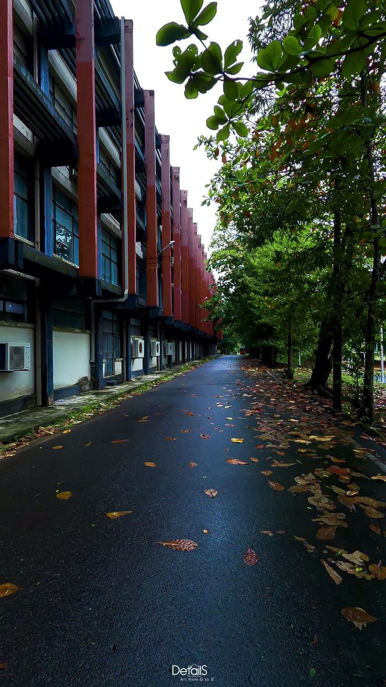
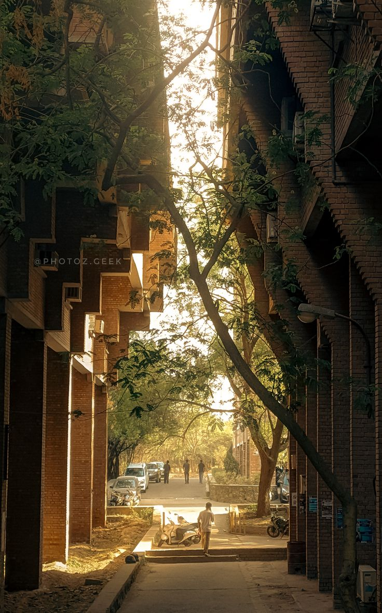
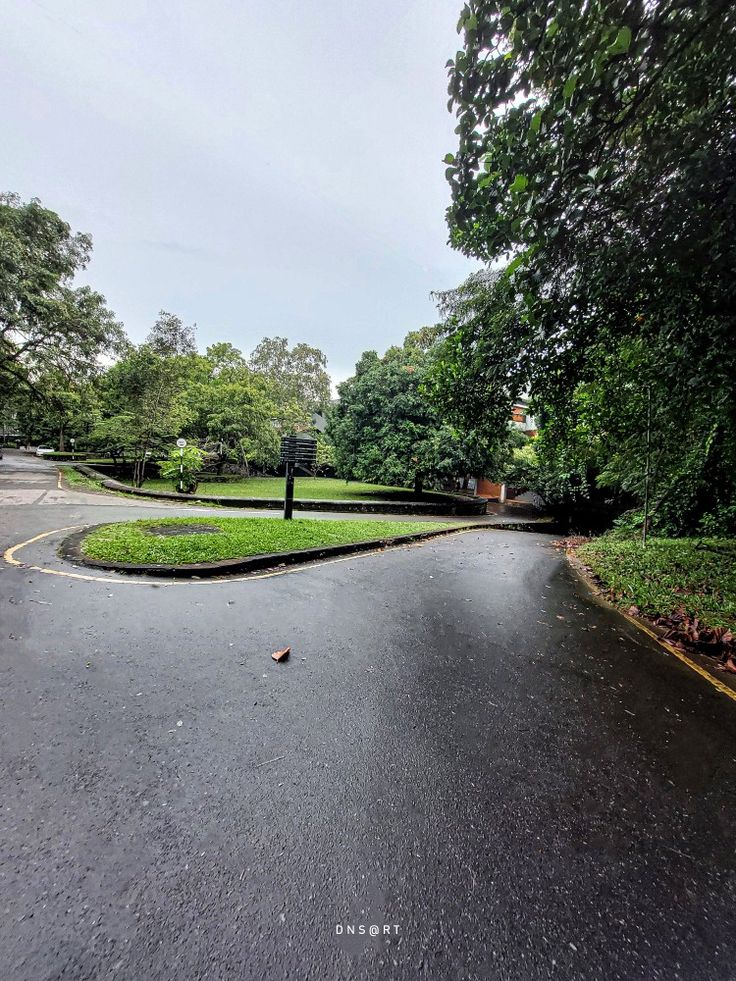
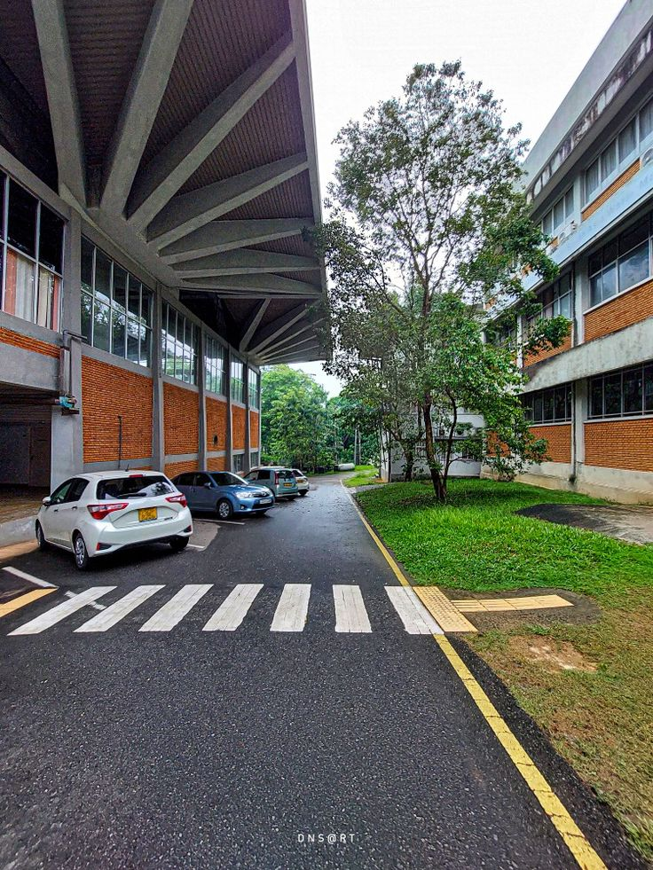
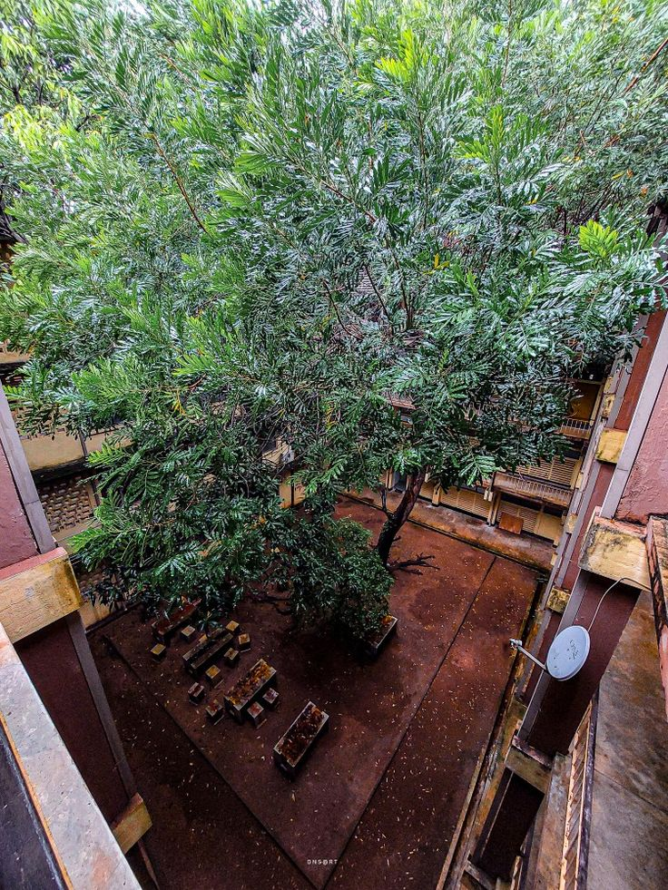
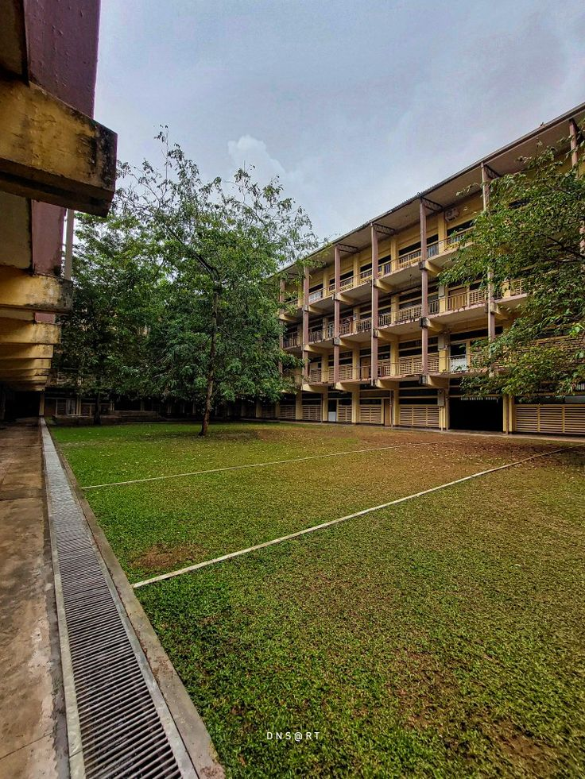
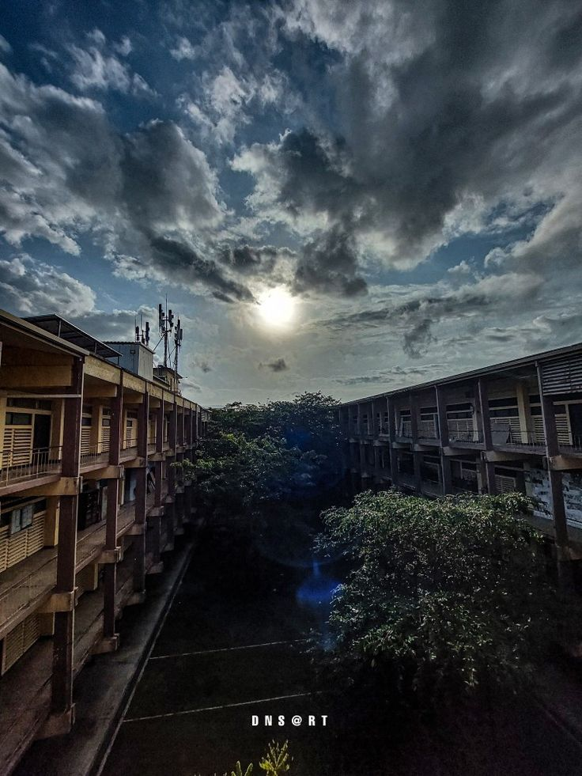
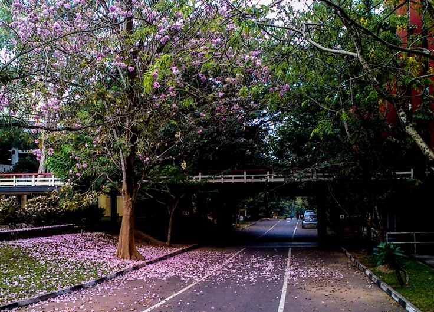
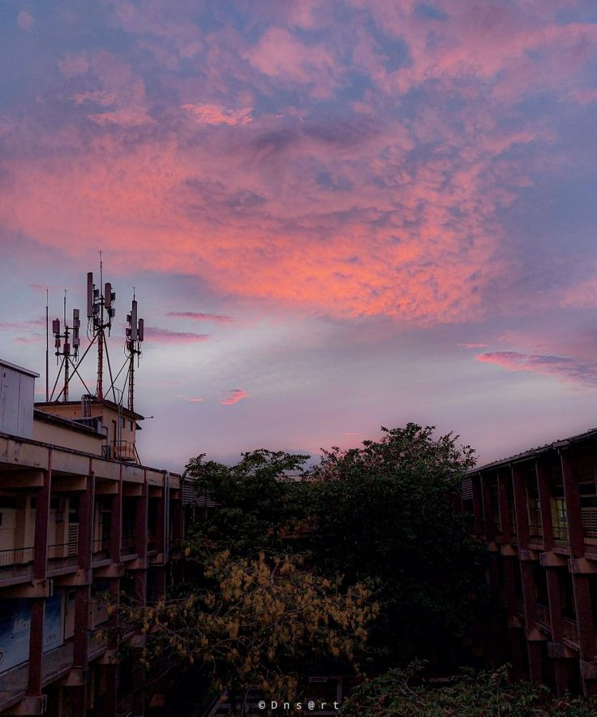
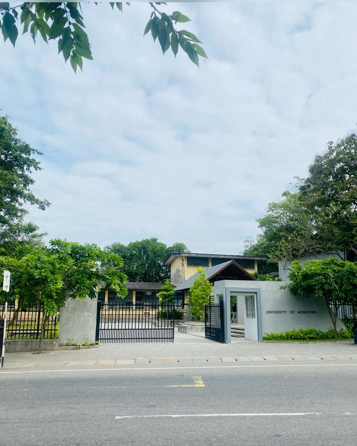

We have the best faculties in Srilanka
Get to know our well reputated Staff
The University of Moratuwa (UOM), the successor to the Institute of Practical Technology, Katubedda set up in 1960 and Ceylon College of Technology set up in 1966, commenced functioning as Katubedda Campus on 15th February 1972.
Under the provisions of Universities Act No. 16 of 1978, the Katubedda Campus of University of Sri Lanka acquired the status of an independent University with its present corporate name "The University of Moratuwa, Sri Lanka".
At present , the UOM consists of six faculties namely Architecture, Business, Engineering, Information Technology, Graduate Studies and Medicine with thirty six (36) academic departments offering fourteen (14) Bachelors degree programs to students selected by the University Grants Commission (UGC) and fifty six (56) postgraduate programs together with MSc, MPhil & PhD research based postgraduate degrees.
The University of Moratuwa has gained reputation as the overall best university in Sri Lanka today. In terms of education, the university strives to produce "world class graduates" in technological fields- who can gain admission easily to any postgraduate program of a reputed world class University and perform as good as any graduate from an internationally reputed University both in higher studies and practice. The overall goal of the UOM therefore, is to produce academically sound , self confident, flexible, highly employable, internationally recognized quality graduates who are readily employable soon after the graduation, and also to train our students to become "job creators" rather than "job seekers" when they graduate.
The university has set several goals in order to be an active player in the economic development of our country while contributing to making Sri Lanka a "Knowledge Hub" by strategic planning and implementing many initiatives.
